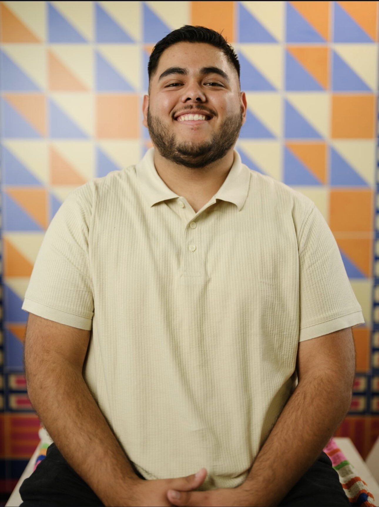

Nicholas Salazar
Technology Professional Intern I

About me
I am Google IT Support, Cybersecurity, and UX/UI Design certified. I am
currently enrolled in the Udemy web developer bootcamp with Dr. Angela Yu.
I enjoy working out problems and having all the pieces fall into place. I
also appreciate the time it takes to learn new skills and don't shy away
from a challenge. There is no better feeling than fixing any software or
hardware issues that keep you from working after spending what feels like
an eternity troubleshooting. I am a Delete the Divide Intern with LA
County and help the public with base IT situations in a library setting. I
also have three years of customer service experience, data collection, and
reception skills from the veterinary industry. I am grateful for the
opportunities presented to me by Delete the Divide and hope to continue to
learn as many skills as I can.
Education and Certificates
Google IT Support April 2023
Google Cybersecurity August 2023
Google UX/UI Design October 2023
Work Experience
-
Technology Professional Intern I (Current)
-
Stationed in County Librareis to help patrons with base technology
issues they ran into. Helped spread the message about Delete the
Divide and the Affordable Connectivity Program (ACP) to help low
income areas have access to technology and internet. Worked through
LA County to host social programs to spread knowledge about the tech
industry.
-
Veterinary Technichian Assistant
-
Built and maintained relationships with clients and patients to
ensure proper care and comfort. Answered and returned approximately
50 calls a day for a variety of issues from appointment confirmation
to client-patient inquiries. Used Vetter software to collect
appropriate information regarding patient issues, obtained contact
information, build client relations, ensure proper medical workup
for patients, and handle estimate creation, explanation, and
transactions for clients to ensure accurate and proper care.
Maintained and cleaned lab machines with proper procedures and
materials to achieve accurate results. Ordered medical supplies,
medication, and lab machines over the phone and online as needed and
recorded entries into Vetter software. Did monthly inventory counts
to ensure stock levels were appropriate. Verified amounts of items
ordered and restocked time-sensitive materials
Skills
- IT Support
- UX Design
- Cybersecurity
- Empathy
- Communication
- Client Relations
- Data Entry
- Inventory Managment
Other
Connect With Me